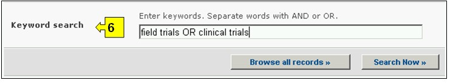

URL: http://bch.cbd.int/database/laws/
En el marco del Protocolo de Cartagena, las Partes tienen la responsabilidad de que la información sobre sus leyes y regulaciones pertinentes esté disponible a través del CIISB.
La interfase de búsqueda de información acerca de Leyes y Regulaciones puede ser obtenida en el vínculo de Búsqueda de Información (Finding Information) en el menú desplegable en la barra de navegación, o en el vínculo en la barra lateral izquierda en la página Búsqueda de Información o en el vínculo de Leyes y Regulaciones en el texto de la misma página.

Figura 17
Esta base de datos les permite a los usuarios buscar por:
-
Leyes Nacionales;
-
Regulaciones Nacionales;
-
Directrices Nacionales;
-
Acuerdos Bilaterales;
-
Acuerdos Multilaterales; y
-
Acuerdos Regionales.
En la página Búsqueda de Leyes y Regulaciones hay seis cuadros de para referenciar los criterios de búsqueda en la base de datos. Cada uno de estos tiene un menú desplegable en el que se puede seleccionar el criterio de búsqueda. La búsqueda por defecto es el primer elemento que aparece en la lista desplegada. En la parte derecha de cada cuadro, un botón le permite al usuario activar selecciones múltiples. Una vez se está en el modo de selección múltiple, es posible agregar más criterios haciendo clic en el criterio y presionando al mismo tiempo la tecla Ctrl (Control).

Figura 18
Cuadro 1 [Seleccione un país] Un menú desplegable presenta una lista de todos los países, de tal modo que los usuarios pueden seleccionar uno o más países específicos en cada búsqueda.

Figura 19
Cuadro 2 [Seleccione un grupo de países] Un menú desplegable presenta una lista que contiene las mayores agrupaciones geográficas y políticas de países y permite seleccionar solamente aquellos registros que han sido enviados por los miembros del grupo o grupos seleccionados.

Figura 20
Cuadro 3 [Tipo de Leyes o regulaciones] presenta una lista de todas las categorías de leyes y regulaciones disponibles en la base de datos y permite al usuario restringir su búsqueda a (i) Leyes Nacionales, Regulaciones y Directrices o (ii) Acuerdos Bilaterales, Regionales o Multilaterales.

Figura 21
Cuadro 4 [Área temática] presenta una lista de los temas de leyes y regulaciones relativos a la implementación del Protocolo de Cartagena. Esta lista permite al usuario limitar la búsqueda a una o más áreas temáticas.

Figura 22
Cuadro 5 [Fecha del registro] permite al usuario que limite la búsqueda de acuerdo con la fecha en la que el registro ha sido ingresado al CIISB. El menú desplegable proporciona un número de opciones para limitar la búsqueda solamente a aquellos registros que han sido enviados dentro del período de tiempo seleccionado (Ej: ‘último día’, ‘último mes’, ‘último año’, etc.)

Figura 23
Cuadro 6 [Búsqueda por palabras clave] Brinda la oportunidad de utilizar palabras clave para restringir la búsqueda. El usuario puede utilizar la sintaxis estándar de palabras clave (combinación de los operadores Y/O) para buscar con múltiples palabras, o partes de palabras (Ej. “Importación O Exportación”). La búsqueda con palabras clave permite obtener solamente registros que contengan el texto exacto y no sinónimos que no hayan sido insertados (Ej: Una búsqueda con la palabra clave “Maíz” producirá una lista de registros que contienen la palabra “Maíz” pero no los registros que contengan “Zea mays”).

Figura 24
La página de búsqueda ofrece tres botones para obtener la lista de registros. El botón Busque Ahora (Tanto en la parte superior como inferior de la interfase de búsqueda) permite al usuario activar una búsqueda basada en los criterios seleccionados en los cuadros de la tabla de búsqueda. Los resultados de búsqueda son ordenados alfabéticamente, por defecto, de acuerdo con el nombre de país. El botón Busque todos los registros (En la parte inferior de la interfase de búsqueda) permite al usuario obtener una lista de todos los registros en esta base de datos

Figura 25
Las páginas de Resultados de Búsqueda poseen una ventana de ordenamiento arriba de la lista de los registros encontrados. Esta puede utilizarse para ordenar los registros de acuerdo con criterios específicos para esa categoría de información. Observe que los resultados cambiarán cuando el usuario ajusta los criterios de búsqueda.

Figura 26
Ejemplo. Un usuario necesita encontrar leyes y regulaciones nacionales en la región de Oceanía. Seleccione Asia-Pacifico-Oceanía en el cuadro Seleccione grupo de país. Seleccione Leyes, regulaciones y directrices nacionales en el cuadro Tipo de leyes o regulaciones. Active Los resultados de la búsqueda se muestran y el usuario puede seleccionar cualquier registro para estudiar la documentación para países específicos en la región.

Figura 27

Figura 28